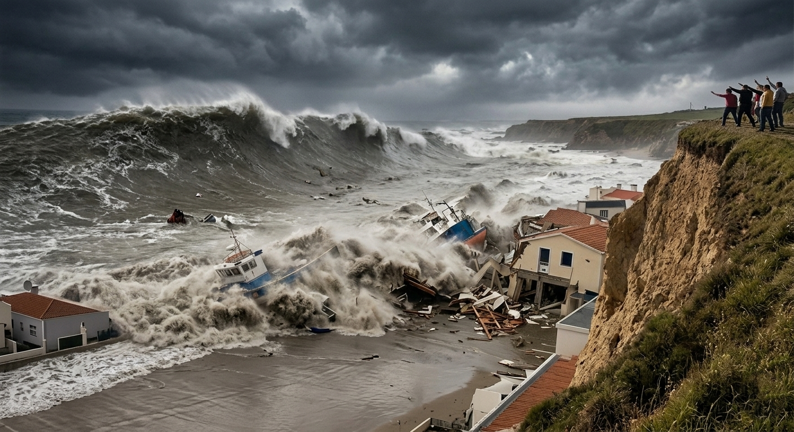

Tsunami Safety
What is a Tsunami?

Volcanic eruptions occur when magma from beneath the Earth’s crust escapes through vents. This can result in lava flows, ash clouds, and pyroclastic flows.
Safety Measures During a Volcanic Eruption
- Evacuate the area if you are in a zone near a volcano.
- Stay indoors and avoid ashfall.
- Cover your nose and mouth to protect from inhaling ash particles.

Real-Life Tsunami Cases
On 26 December 2004, An earthquake in northern Sumatra, Indonesia caused a massive Tsunami with waves upto 30m (100 ft) high known as The Asian Tsunami.
Learn More About the Asian Tsunami